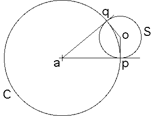

Suppose the circle C intersects the circle S orthogonally, that is, at p and q, the points of intersection, the tangent of S is perpendicular to the tangent of C.
|  |
Because p and q lie on C, by property (i) inversion across C leaves p and q unchanged.
Consequently, p and q lie on S', the inverse of S across C.
Recall the radius of a circle is perpendicular to its tangent, so the radii ap and aq of C through p and q are tangent to S.
The radius of S through q is perpendicular to aq, the radius of S through p is perpendicular to ap.
The perpendicular to aq at q and the perpendicular to ap at p intersect at the center o of S.
Inversion preserves tangency, so aq and ap are tangent to S' at q and p.
Consequently, o is the center of S', and S' = S.
Return to properties of inversion.